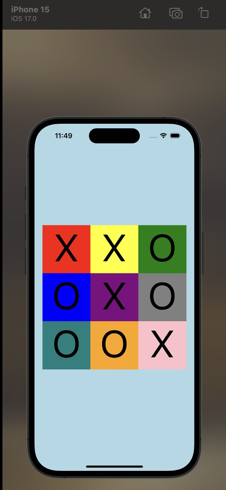

Project 2
A React Native composition exercise that uses nested flex layouts to build a colorful static game board.
Report Summary
This project focuses on spatial layout rather than game logic. The interface is assembled from one main container, a square board, and stacked row and column wrappers to produce a 3x3 grid.
Project Screenshot

Live Preview